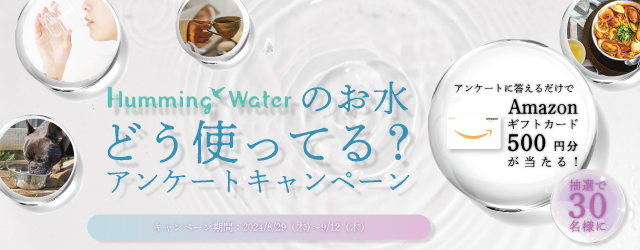

アンケートキャペーンのバナー -part2-
制作時期：2024年8月
制作時間：5時間
使用ツール：Illustrator・Photoshop
ウォーターサーバーを取り扱う現職にてアンケートキャンペーンを実施する際に製作したバナーの別案です。
キャンペーン名にちなんで、水のイメージを強調して製作しました。
アンケートの選択肢の内容を水滴の中に画像で配置して散りばめ、"お水どう使ってる？"という言葉だけでな
く画像でも回答者に伝えています。
素材選びはもちろん、文字に”にじみフォント”を使用したり光彩をつけたりすることで、水の透明感にこだわ
りました。